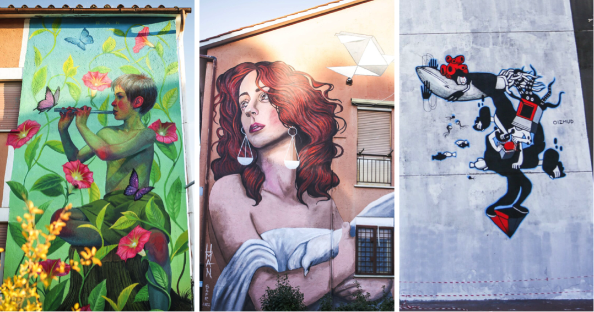
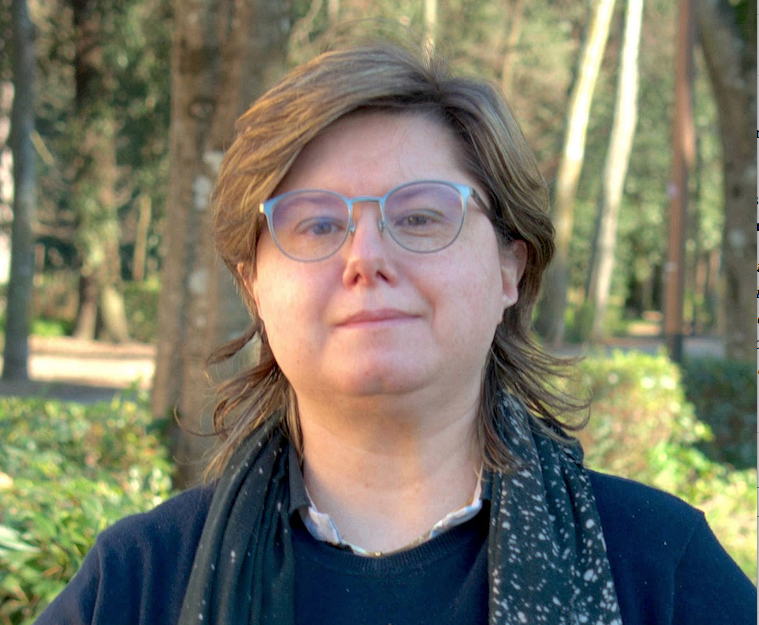

STREET ART FOR RIGHTS 2022 SULLE DONNE, CON LE DONNE E PER LE DONNE
Il festival Street Art for Rights a Roma mette al centro i diritti
umani e lo fa ponendo anche l’accento sulle donne.

foto di Elenoire
ROMA – Il festival Street Art for Rights a Roma mette al
centro i diritti umani e lo fa ponendo anche l’accento sulle donne,
con le donne e per le donne. Per questa ultima edizione sono state
invitate tre artiste donne di fama internazionale per rappresentare
tre degli obiettivi dell’Agenda 2030 ONU: la vita sott’acqua
(Obiettivo n. 14) con Barbara Oizmud, la vita sulla terra (Obiettivo
n. 15) con Natalia Rak e la Pace, giustizia e istituzioni solidali
(Obiettivo n. 16) con Manuela Merlo in arte Human. Il mondo della
street art, come tanti altri settori lavorativi e artistici, è
purtroppo dominato prettamente da uomini. Per una donna inserirsi in
questa categoria è molto difficile e per chi non si accontenta di
essere “solo” una street artist qualunque, l’impresa è ancora più
ardua. Eppure qui siamo di fronte a tre donne “che ce l’hanno
fatta”. In questa occasione le tre artiste usano la propria arte
contro le disparità di genere, le disuguaglianze nel mercato del
lavoro, ogni forma di violenza fisica e psicologica. Temi
attualissimi, al centro della Giornata internazionale per
l’eliminazione della violenza contro le donne che viene celebrata
ogni anno il 25 novembre.
FIRENZE, NASCE LA FONDAZIONE ARTE SACRA CONTEMPORANEA
Little article summary

Lucia Tanti direttore Fondazione Arte Sacra Contemporanea
FIRENZE – A Firenze nasce la Fondazione Arte Sacra Contemporanea che
sarà “tenuta a battesimo”, sabato 26 novembre alle ore 11.00, presso
il Cenacolo di Santa Croce (Piazza Santa Croce, 16), da Micol Forti,
curatore della collezione di Arte Moderna e Contemporanea dei Musei
Vaticani. Alla cerimonia, che ufficializzerà la neonata Fondazione e
che aprirà ufficialmente l’anno accademico 2022/23, prenderanno parte
Stefano Filipponi, segretario generale dell’Opera di Santa Croce,
Paolo Blasi vicepresidente Fondazione Arte Sacra Contemporanea e Lucia
Tanti direttore Fondazione Arte Sacra Contemporanea. La Fondazione,
che nasce dall’esperienza della Scuola di Arte Sacra, realtà
internazionale che da più di dieci anni opera a Firenze, “si propone
di essere il crocevia di tutte le professioni che hanno a che fare con
il sacro, lavorando alla formazione di una nuova generazione di
artisti, artigiani, guide turistiche, operatori museali e promuovendo
occasioni di approfondimento culturale sull’universo delle molteplici
espressioni dell’arte contemporanea” – si legge in una nota. Sede
della Fondazione è nel cuore del Parco delle Cascine dove allievi di
tutto il mondo frequentano i laboratori tematici che offrono
molteplici e differenziate possibilità di formazione. Il cda è
composto da Comune di Firenze, Arcidiocesi di Firenze, Fondazione
Cassa di Risparmio di Firenze, Fabbricerie Fiorentine, Facoltà
Teologica dell’Italia Centrale, IUL Università Telematica e Artes LAB
e presieduto da Stefania Fuscagni, la Fondazione Arte Sacra
Contemporanea. “Trasformare la scuola in fondazione– dichiara Lucia
Tanti – è una piccola rivoluzione nella continuità. Una sfida
formativa e culturale che guarda al futuro: valorizzando e lavorando
sul nostro patrimonio artistico, facciamo nostri i principi
dell’economia generativa e rinnovabile che fa dell’arte sacra una leva
di sviluppo sapendo che non si vive di rendita. Da qui la parola che è
cuore di tutto: contemporaneità, parlare alle persone di oggi con i
linguaggi di oggi, le suggestioni di oggi, i materiali di oggi. Una
sfida che ha anche una forte vocazione istituzionale: non saremmo mai
nati se le persone non si fossero unite alle istituzioni e per questo
ringrazio i componenti del cda e tutti i soci fondatori che hanno
creduto in questo ambizioso progetto di trasformazione”.